9. Sea Ice Thermodynamics¶
This chapter describes the physics of the sea ice thermodynamics beginning with basic assumptions and followed by a description of the fundamental equations, various parameterization, and numerical approximations. The philosophy behind the design of the sea ice formulation of CAM6.0 is to use the same physics, where possible, as in the sea ice model within CCSM, which is known as CSIM for community sea ice model. The sea ice formulation in CAM6.0 uses parameterizations from CSIM for predicting snow depth, brine pockets, internal shortwave radiative transfer, surface albedo, ice-atmosphere drag, and surface exchange fluxes. The full CSIM is described in detail in an NCAR technical note by [BBH+02]. The pieces of CSIM that are also used in CAM6.0 (without the flux coupler) are described here.
The features of the sea ice model that are used in depend on the boundary conditions over ice-free ocean. If sea surface temperatures (SSTs) are prescribed, then sea ice concentration and thickness are also prescribed. In this case, the primary function of the sea ice model in CAM6.0 is to compute surface fluxes. However, if the slab ocean model is employed, sea ice thickness and concentration are computed within CAM6.0. These two types of surface boundary conditions within CAM6.0 will be referred to as uncoupled and coupled in this chapter.
9.1. Basic assumptions¶
When CAM6.0 is run uncoupled (i.e., without an ocean model), sea ice thickness and concentration must be specified. Sea ice concentrations are known with reasonable accuracy owing to satellite microwave instruments and ship observations. However, no adequate measurements of thickness exist to produce a comprehensive dataset. Therefore, when ice thickness must be specified, the thickness of the ice covered portion of the grid cell is fixed in space and time at 2 m in the Northern Hemisphere and 0.5 m in the Southern Hemisphere. Ice concentrations are interpolated from monthly input data, which may vary in space and time. [1]
For either coupled or uncoupled integrations, snow depth on sea ice is prognostic as snow accumulates when precipitation falls as snow, and it melts when allowed by the surface energy balance. For uncoupled simulations only, the maximum snow depth is fixed at 0.5 m. Rain has no effect on sea ice or snow on sea ice in the model.
9.2. Fundamental Equations¶
The method for computing the surface turbulent heat and radiative exchange, evaporative flux, and surface drag is integrally coupled with the formulation of heat transfer through the sea ice and snow. The equation governing vertical heat transfer in the ice and snow, which allows for internal absorption of penetrating solar radiation, is
(1)
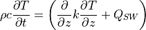
where  is the density,
is the density,  is the heat capacity,
is the heat capacity,
 is the temperature,
is the temperature,  is the thermal conductivity,
is the thermal conductivity,
 is shortwave radiative heating,
is shortwave radiative heating,  is the vertical
coordinate, and
is the vertical
coordinate, and  is time. Note that , ,
and differ for snow and sea ice, and also the latter two
depend on temperature and salinity within the sea ice to account for the
behavior of brine pockets.
is time. Note that , ,
and differ for snow and sea ice, and also the latter two
depend on temperature and salinity within the sea ice to account for the
behavior of brine pockets.
The boundary condition for the heat equation at the surface is
(2)
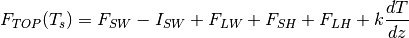
where  is the surface temperature,
is the surface temperature,  is the
absorbed shortwave flux,
is the
absorbed shortwave flux,
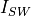
is the shortwave flux that penetrates into the ice interior,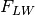
is the net longwave flux,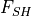
is the sensible heat flux, and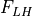
is the latent heat flux. All fluxes are taken as positive down. If , then the surface is assumed to be melting
and a temperature boundary conditions (i.e.,
, then the surface is assumed to be melting
and a temperature boundary conditions (i.e.,  ) is used for
the upper boundary with Eq. [eq:heateq]. However if
) is used for
the upper boundary with Eq. [eq:heateq]. However if
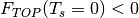
in Eq. [eq:top], then the surface is assumed to be freezing and a flux boundary condition is used for Eq. [eq:heateq], and Eqs. [eq:heateq] and [eq:top] are solved simultaneously with in the latter.
in the latter.
Snow melt and accumulation is computed from
(3)
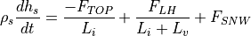
where
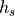
is the snow depth, is the snow density,
is the snow density,
 and
and  are the latent heats of fusion and
vaporization, and
are the latent heats of fusion and
vaporization, and 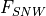
is the snowfall rate (see Table [table:siphysconst] for values of constants).When CAM6.0 is coupled to the mixed layer ocean and the sea ice is snow-free, sea ice surface melt is computed from
(4)
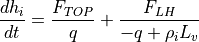
where
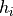
is the ice thickness, is the ice
density, and
is the ice
density, and  is the energy of melting of sea ice (
is the energy of melting of sea ice (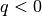
by definition, see section [bpocks] on brine pockets). Basal growth or melt is computed from(5)
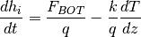
where  is the heat flux from the ocean to the ice (see
section [Fbot-sec]). Finally an equation is needed to describe the
evolution of the ice concentration
is the heat flux from the ocean to the ice (see
section [Fbot-sec]). Finally an equation is needed to describe the
evolution of the ice concentration  :
:
(6)
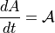
where
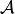
accounts for new ice formation over open water and lateral melt (see section [lateralmelt])Parameterizations of albedo, surface fluxes, brine pockets, and shortwave radiative transfer within the sea ice are given next. Finally, the numerical solution to Eq. [eq:heateq] is described. Numerical methods for Eqs. [eq:top] –[eq:daice] are straight-forward and hence are not described here.
[htb]
& Density of snow & 330 kg m & Density of ice & 917 kg m
& Density of ice & 917 kg m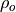
& Density of surface ocean water & 1026 kg m & Specific heat of atmosphere dry & 1005 J
kg
& Specific heat of atmosphere dry & 1005 J
kg K
K & Specific heat of atmosphere water & 1810 J
kg K
& Specific heat of atmosphere water & 1810 J
kg K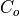
& Specific heat of ocean water & 3996 J kg
K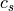
& Specific heat of snow & 0 J kg
K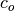
& Specific heat of fresh ice & 2054 J kg
K & Aerodynamic roughness of ice & 5.0x10
& Aerodynamic roughness of ice & 5.0x10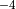
m & Reference height for bulk fluxes & 10 m
& Reference height for bulk fluxes & 10 m & saturation specific humidity constant & 11637800
& saturation specific humidity constant & 11637800 & saturation specific humidity constant & 5897.8
& saturation specific humidity constant & 5897.8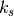
& Thermal conductivity of snow & 0.31 W m
K & Thermal conductivity of fresh ice & 2.0340 W
m K
& Thermal conductivity of fresh ice & 2.0340 W
m K & Thermal conductivity ice constant & 0.1172 W
m ppt
& Thermal conductivity ice constant & 0.1172 W
m ppt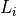
& Latent heat of fusion of ice & 3.340x10 J
kg
J
kg & Latent heat of vaporization & 2.501x10
& Latent heat of vaporization & 2.501x10 J
kg
J
kg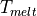
& Melting temperature of top surface & 0 C
C & Ocean freezing temperature constant & 0.054
C ppt
& Ocean freezing temperature constant & 0.054
C ppt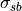
& Stefan-Boltzmann constant & 5.67x10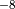
W m K
K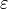
& Ice emissivity & 0.95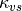
& Ice SW visible extinction coefficient & 1.4 m & Ice SW near-ir extinction coefficient & 17.6
m
& Ice SW near-ir extinction coefficient & 17.6
mNOTE: CSIM in CAM6.0 uses the shared constants defined in Appendix [physicalconstants].
9.3. Snow and Ice Albedo¶
The albedo depends upon spectral band, snow thickness, ice thickness and surface temperature. Snow and ice spectral albedos (visible
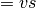
, wavelengths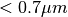
and near-infrared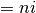
, wavelengths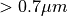
) are distinguished, as both snow and ice spectral reflectivities are significantly higher in the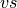
band than in the band. This two-band separation represents the basic
spectral dependence. The near-infrared spectral structure, with
generally decreasing reflectivity with increasing wavelength (Ebert and
Curry 1993) is ignored. The zenith angle dependence of snow and ice is
ignored (Ebert and Curry 1993; Grenfell, Warren, and Mullen 1994), and
hence there is no distinction between downwelling direct and diffuse
shortwave radiation. The approximations made for the albedo are further
described by Briegleb et al. (2002).
band. This two-band separation represents the basic
spectral dependence. The near-infrared spectral structure, with
generally decreasing reflectivity with increasing wavelength (Ebert and
Curry 1993) is ignored. The zenith angle dependence of snow and ice is
ignored (Ebert and Curry 1993; Grenfell, Warren, and Mullen 1994), and
hence there is no distinction between downwelling direct and diffuse
shortwave radiation. The approximations made for the albedo are further
described by Briegleb et al. (2002).
Here we ignore the dependence of snow albedo on age, but retain the melting/non-melting distinction and thickness dependence. Dry snow spectral albedos are:

To represent melting snow albedos, the surface temperature is used. Springtime warming produces a rapid transition from sub-zero to melting temperatures, while late fall values transition more slowly to sub-zero conditions. This is approximated by a temperature dependence out to
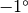
C. If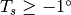
C, then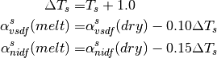
For bare non-melting sea ice thicker than 0.5 m, as is the case for all sea ice prescribed in CAM6.0, the albedos are
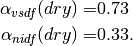
For bare melting sea ice, melt ponds can significantly lower the area averaged albedo. This effect is crudely approximated by the following temperature dependence:
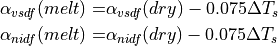
for C.
The horizontal fraction of surface covered with snow is assumed to be
(7)
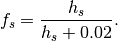
Finally, combining ice and snow albedos by averaging over the horizontal coverage results in

The same equations applies for direct albedos.
9.4. Ice to Atmosphere Flux Exchange¶
Atmospheric states and downwelling fluxes, along with surface states and
properties, are used to compute atmosphere-ice shortwave and longwave
fluxes, stress, sensible and latent heat fluxes. Surface states are
temperature  and albedos
and albedos  ,
,
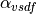
, ,
, 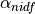
(see section [albedo]), while surface properties are longwave emissivity and aerodynamic roughness (note that
these properties in general vary with ice thickness, but are here
assumed constant). Additionally, certain flux temperature derivatives
required for the ice temperature calculation are computed, as well as a
reference diagnostic surface air temperature.
The following formulas are for the absorbed shortwave fluxes and upwelling longwave flux:
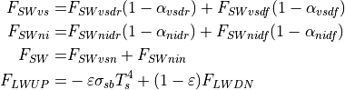
for in Kelvin and denotes the
Stefan-Boltzmann constant. The downwelling shortwave flux and albedos
distinguish between visible ( ),
near-infrared (
),
near-infrared (
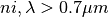
), direct ( ) and diffuse (
) and diffuse (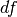
) radiation for each category. Note that the upwelling longwave flux has a reflected component from the downwelling longwave whenever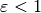
.For stress components  and
and
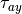
and sensible and latent heat fluxes the following bulk formulas are used (Bryan et al. 1996):(8)
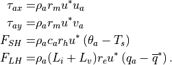
The quantities from the lowest layer of the atmosphere include wind components
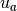
and , the density of air
, the density of air
 , the potential temperature
, the potential temperature 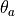
, and the specific humidity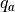
. The surface saturation specific humidity is
where the values of  and
and  were kindly supplied by
Xubin Zeng of the University of Arizona. The specific heat of the air in
the lowest layer is evaluated from
were kindly supplied by
Xubin Zeng of the University of Arizona. The specific heat of the air in
the lowest layer is evaluated from
where specific heat of dry air and water vapor are and
, respectively. Values for the exchange coefficients for
momentum, sensible and latent heat and the friction
velocity require further consideration.
The bulk formulas are based on Monin-Obukhov similarity theory. Among
boundary layer scalings, this is the most well tested (Large 1998). It
is based on the assumption that in the surface layer (typically the
lowest tenth of the atmospheric boundary layer), but away from the
surface roughness elements, only the distance from the boundary and the
surface kinematic fluxes are important in the turbulent exchange. The
fundamental turbulence scales that are formed from these quantities are
the friction velocity , the temperature and moisture
fluctuations and  respectively, and
the Monin-Obukhov length scale
respectively, and
the Monin-Obukhov length scale  :
:
with

to prevent zero or small fluxes under quiescent wind conditions,
 is von Karman’s constant (0.4), and
is von Karman’s constant (0.4), and  is the
buoyancy flux, defined as:
is the
buoyancy flux, defined as:
with g the gravitational acceleration and the virtual potential
temperature  where
where  .
.
Similarity theory holds that the vertical gradients of mean horizontal
wind, potential temperature and specific humidity are universal
functions of stability parameter  , where
is height above the surface (
, where
is height above the surface ( is positive for a stable
surface layer and negative for an unstable surface layer). These
universal similarity functions are determined from observations in the
atmospheric boundary layer (Hogstrom 1988) though no single form is
widely accepted. Integrals of the vertical gradient relations result in
the familiar logarithmic mean profiles, from which the exchange
coefficients can be defined, where :
is positive for a stable
surface layer and negative for an unstable surface layer). These
universal similarity functions are determined from observations in the
atmospheric boundary layer (Hogstrom 1988) though no single form is
widely accepted. Integrals of the vertical gradient relations result in
the familiar logarithmic mean profiles, from which the exchange
coefficients can be defined, where :
with the neutral coefficient
The flux profile functions (integrals of the similarity functions
mentioned above) for momentum  and heat/moisture
and heat/moisture  are:
are:
for stable conditions ( ). For unstable conditions
(
). For unstable conditions
( ):
):
The stability parameter is a function of the turbulent
scales and thus the fluxes, so an iterative solution is necessary. The
coefficients are initialized with their neutral value , from
which the turbulent scales, stability, and then flux profile functions
can be evaluated. This order is repeated for five iterations to ensure
convergence to an acceptable solution.
The surface temperature derivatives required by the ice temperature calculation are evaluated as:

where the small temperature dependencies of , the exchange
coefficients  and
and  and velocity scale
are ignored.
and velocity scale
are ignored.
For diagnostic purposes, an air temperature ( ) at the
reference height of
) at the
reference height of  is computed, making use of the
stability and momentum/sensible heat exchange coefficients. Defining
is computed, making use of the
stability and momentum/sensible heat exchange coefficients. Defining
 , and
, and  , we have:
, we have:
For stable conditions ()
where is bounded by 0 and 1. The resulting reference temperature is:
9.5. Ice to Ocean Flux Exchange¶
This section is only relevant when cam is coupled to a slab ocean. When sea ice is present, only a fraction of the melting potential from heat stored in the ocean actually reaches the ice at the base and side. The melting potential is
where , , , and  are the
ocean layer thickness, density, heat capacity, and temperature and
are the
ocean layer thickness, density, heat capacity, and temperature and
 is the freezing temperature of the layer (assumed to be
-1.8:math:^oC).
is the freezing temperature of the layer (assumed to be
-1.8:math:^oC).
Usually only a fraction of is available to melt ice at
the base and side, and these fractions are determined from
boundary-layer theories at the ice-ocean interfaces. However, it is
critical that the sum of the fractions never exceeds one, otherwise ice
formation might become unstable. Hence we compute the upper-limit
partitioning of , even though these amounts are rarely
reached. The partitioning assumes  is dominated by
shortwave radiation and that shortwave radiation absorbed in the ocean
surface layer above the mean ice thickness causes side melting and below
it causes basal melting:
is dominated by
shortwave radiation and that shortwave radiation absorbed in the ocean
surface layer above the mean ice thickness causes side melting and below
it causes basal melting:

where , ,
(Paulson and Simpson 1983) and
and are the fractions of bottom and side melt flux
available, respectively. Thus the maximum fluxes available for melt are
and . The actual amount
used for bottom melting, , is based on boundary layer
theory of McPhee (1992):
(9)
where the empirical drag coefficient =0.006 and the skin
friction speed  cm/s (Steele 1995).
cm/s (Steele 1995).
The heat flux for lateral melt is the product of the vertically-summed,
thickness-weighted energy of melting of snow and ice  with the interfacial melting rate and the total floe
perimeter
with the interfacial melting rate and the total floe
perimeter  per unit floe area . The interfacial
melting rate is taken from the empirical expression of Maykut and
Perovich (1987) based on Marginal Ice Zone Experiment observations:
, where
m s deg
and
per unit floe area . The interfacial
melting rate is taken from the empirical expression of Maykut and
Perovich (1987) based on Marginal Ice Zone Experiment observations:
, where
m s deg
and  . The lead-ice perimeter depends on the ice floe
distribution and geometry. For a mean floe diameter
. The lead-ice perimeter depends on the ice floe
distribution and geometry. For a mean floe diameter  and number
of floes , and the floe area
and number
of floes , and the floe area  (Rothrock and
Thorndike 1984). Thus the heat flux for lateral melt is
, so that the actual amount used is:
(Rothrock and
Thorndike 1984). Thus the heat flux for lateral melt is
, so that the actual amount used is:
(10)
where (Rothrock and Thorndike 1984). Based
partially on tuning and partially on the results of floe distribution
measurements, the mean floe diameter of =300 m was chosen.
The ice area, volume, snow volume, and ice energy are all reduced by
side melt in time  by the fraction
.
by the fraction
.
The heat flux that is actually used by the ice model is then:
The net flux exchanged between ocean and ice also
includes the shortwave flux transmitted to the ocean through sea ice

(see Eq. [eq:swtran]). Hence
(11)
9.6. Brine Pockets and Internal Energy of Sea Ice¶
Shortwave radiative heating within the sea ice and conduction warms the
sea ice and opens brine pockets, melting the ice internally and storing
latent heat. This storage of latent heat is accounted for explicitly by
using a heat capacity and thermal conductivity that depend on
temperature and salinity following the work of Maykut and Untersteiner
(1971) and Bitz and Lipscomb (1999). The equation for the heat capacity
for sea ice was first postulated by Untersteiner (1961) and
then later derived from first principles by Ono (1967):
(12)
where is the heat capacity for fresh ice,  is the
sea ice salinity, is the temperature, and is an
empirical constant relating the freezing temperature of sea water
linearly to its salinity ().
is the
sea ice salinity, is the temperature, and is an
empirical constant relating the freezing temperature of sea water
linearly to its salinity ().
Equation [eq:ci] can be multiplied by the sea ice density and integrated
to give the amount of energy  required to raise the temperature
of a unit volume of sea ice from to :
required to raise the temperature
of a unit volume of sea ice from to :
(13)
If we take to be the melting temperature of ice with salinity
, then at sea ice consists entirely of brine; that
is, the brine pockets have grown to encompass the entire mass of ice.
The amount of energy needed to melt a unit volume of sea ice of salinity
at temperature , resulting in meltwater at
, is equal to
(14)
is referred to as the energy of melting of sea ice, and it
appears in Eqs. [eq:hicetop] and [eq:hicebot].
The thermal conductivity for sea ice is
where and are empirical constants from
Untersteiner (1961).
The vertical salinity profile is prescribed based on the work of Maykut and Untersteiner (1971) to be
with the normalized coordinate . This results in a profile that varies from ppt at ice surface increasing to ppt at ice base. Snow is assumed fresh.
Shortwave radiative heating within the sea ice is equal
to the vertical gradient of the radiative transfer within the sea ice:
(15)
where and , the visible and near infrared
radiation fluxes that penetrate the surface, are reduced according to
Beer’s law with the sea ice spectral extinction coefficients
and , respectively. For
simplicity no shortwave radiation is allowed to penetrate through snow
and all of the near-infrared radiation and 30% of the visible radiation
is assumed to be absorbed at the surface of sea ice (Gary Maykut,
personal communication):
where  is the horizontal fraction of surface covered by
snow (see Eq. [horizfrac]).
is the horizontal fraction of surface covered by
snow (see Eq. [horizfrac]).
9.7. Open-Water Growth and Ice Concentration Evolution¶
When coupled to a mixed layer ocean, the ice model must account for new ice growth over open water and other processes that alter the lateral sea ice coverage. New ice growth occurs whenever the surface layer in the ocean is at the freezing temperature and the fluxes would draw additional heat out of the ocean (see Eq. [6.a.1]). In this case the additional heat comes from freezing sea water, as the ocean cannot supercool in this model. Hence
(16)
where is the energy of melting for new ice growth (assuming the salinity is 4psu and the new ice temperature is -1.8:math:^oC), is the thickness of the new ice, and is the additional heat lost by slab ocean once it reaching the freezing point (see section 5.1). When new ice grows over open water, it is recombined with the rest of the ice in the grid cell by first reshaping the new ice volume so its thickness is at least 15 cm - this recreates ice-free ocean if the thickness was below 15 cm. Then the new ice is added to the old ice in the grid cell and a new thickness and concentration are computed by conserving ice volume.
In motionless sea ice model, such as this one, open water is not created by deformation as in nature, and hence the ice concentration would tend to 0 or 100% unless open water production is parameterized somehow. A typical method is to assume the ice thickness on a subgrid-scale is linearly distributed between 0 and , so that when ice melts vertically, it also reduces the concentration:
(17)
The ice concentration is also reduced by a lateral heat flux from the ocean (see Eq. [FSID]):
(18)
although it is typically only a small contribution to the concentration tendency.
It is not possible to combine Eqs. [hnew]–[dA2] to make a single analytic expression for in Eq. [eq:daice]. Instead the model using time splitting to solve the three equations independently.
9.8. Snow-Ice Conversion¶
Snow to ice conversion occurs if the snow layer overlying the sea ice becomes thick enough to depress the snow-ice interface below freeboard (the ocean surface). This process is only accounted for when CAM6.0 is coupled to a mixed layer ocean, otherwise the snow depth is merely capped at 0.5 m. The interface height is:
If  , then an amount of snow equal to
is removed from the snow layer and
added to the ice. It is assumed that ocean water floods the depressed
snow, and then converts it into ice of thickness . The
energy of melting of the newly formed ice is:
. Note that such conversion is
assumed to occur with no heat or salt exchange with the ocean.
, then an amount of snow equal to
is removed from the snow layer and
added to the ice. It is assumed that ocean water floods the depressed
snow, and then converts it into ice of thickness . The
energy of melting of the newly formed ice is:
. Note that such conversion is
assumed to occur with no heat or salt exchange with the ocean.
9.9. Numerics¶
The heat content change within the sea ice over the time interval
to corresponding to temperatures and
, respectively, allowing for temperature dependent heat
capacity, thermal conduction (see section [bpocks]) and internal
absorption of penetrating solar radiation, is given by:

The heat equation is discretized using a backwards-Euler, space-centered scheme. Using a staggered grid with representing the layer temperature and representing conductivity at the layer interfaces, for interior layers we have
(19)
where , the conductivity is
and the absorbed solar radiation is

Vertical grid of the sea ice (a) when snow is present and (b)
when the ice is snow free; is the thickness of an
ice layer and is the thickness of the snow layer. The
surface temperature in either case is . Modified from Bitz
and Lipscomb (1999).
See Figure [fig:stag] for a diagram on the vertical level structure.
For a purely implicit backward scheme, should be evaluated at
the time level. However, when is evaluated at time
level , experiments show that the solution is stable and
converges to the same solution one gets when evaluating at
.
The discrete heat equation for the surface layers is modified slightly from (19) to maintain second-order accuracy for . The equation for the bottom layer () is
(20)
where the  interface in contact with the underlying ocean is
assumed to be at temperature C, and where the
conductivity is simply . The equations for
the top surface depend on the surface conditions, of which there are
four possibilities, as outlined in Table [tab:bc].
interface in contact with the underlying ocean is
assumed to be at temperature C, and where the
conductivity is simply . The equations for
the top surface depend on the surface conditions, of which there are
four possibilities, as outlined in Table [tab:bc].
| snow accumulated | melting | |
|---|---|---|
| case I | yes | no |
| case II | no | no |
| case III | yes | yes |
| case IV | no | yes |
Table: Top Surface Boundary Cases
9.9.1. Case I: Snow accumulated with no melting¶
The discrete heat equation for the uppermost layer (i.e, the snow layer) is
(21)
The heat equation solver is formulated for the general case where the
heat capacity of snow may be specified, although it is taken
to be . The parameters  and are
defined to give second-order accurate spatial differencing for
across the changing layer spacing at the
snow/ice boundary;
and are
defined to give second-order accurate spatial differencing for
across the changing layer spacing at the
snow/ice boundary;
The conductivity at the snow–ice interface is found by equating conductive fluxes above and below the interface;
Because is below melting, a flux boundary condition is
used, and an additional equation is required in the coupled set:
(22)
where is the sum of all terms on the right-hand side of Eq. [eq:top] except . The net surface flux is approximated as linear in ; thus
(23)
with
To simplify our set of equations, we define
(24)
where the hat implies that  depends on
as well as on , and
depends on
as well as on , and
(25)
Also, let
(26)![\begin{aligned}
k_l&= {k_l^m \over \Delta h^m}.\\*[-1.0em]
\intertext{for $l \ge 2$ and} \nonumber\\*[-2.0em]
k_0&= {k_s \over h_s^m} \\
k_1&= {k_1^m \over (\Delta h^m + h_s^m)/2}\end{aligned}](../_images/math/5a589276618705ca4de8dddfd316f3519d83e096.png)
and suppress the index for  , so that for
interior layers (),
, so that for
interior layers (),
![\begin{aligned}
T_l^{m+1}-T_l^m&=\chi_l^{m+1}\left[k_{l+1}(T_{l+1}^{m+1}-T_l^{m+1})
-k_l(T_l^{m+1}-T_{l-1}^{m+1})+I_l\right]\\
\intertext{and at the bottom layer}\nonumber\\*[-1.0em]
T_L^{m+1}-T_L^m&=\chi_L^{m+1}\biggl[3k_b(T_b-T_L^{m+1})
-{1 \over 3}k_b(T_b-T_{L-1}^{m+1})
& \ \ \ \ \ \ \ \ \ \ \ \
-k_L(T_L^{m+1}-T_{L-1}^{m+1})+I_L\biggr] \end{aligned}](../_images/math/71f9180441a14635193326a24c1495b688e7e6d6.png)
where . The equation describing the snow layer is written
(27)
Finally, the flux boundary condition becomes
The complete set of coupled equations for case I can be written with all of the terms that explicitly depend on temperature at the time step gathered on the right-hand side:
(28)![-F_o(T_s^m)+ \left.{\partial F_o \over
\partial T_s}\right|_{T_s^m}T_s^m &=
T_s^{m+1}\left(\left.{\partial F_o \over \partial T_s}
\right|_{T_s^m}-\alpha k_0 - \beta k_0 \right) \\
& \hspace{0.5cm} + T_0^{m+1} \alpha k_0 + T_1^{m+1} \beta k_0 \\
\rho_s c_s T_0^m &=
T_s^{m+1}\left( -{\Delta t \over h_s^m } \right) (\alpha k_0
+ \beta k_0) \\
& \hspace{0.5cm} + T_0^{m+1}\left( \rho_s c_s
+ {\Delta t \over h_s^m } (\alpha k_0+k_1) \right) \\
& \hspace{0.5cm} + T_1^{m+1}{\Delta t \over h_s^m } (\beta k_0-k_1) \\
T_l^m + \chi_l^{m+1} I_l &=
T_{l-1}^{m+1}(-\chi_l^{m+1} k_l) \\
& \hspace{0.5cm} + T_l^{m+1}(1+\chi_l^{m+1} k_l + \chi_l^{m+1} k_{l+1} ) \\
& \hspace{0.5cm} + T_{l+1}^{m+1}(-\chi_l^{m+1} k_{l+1}) \\
T_L^m + \chi_L^{m+1} I_L + {8 \over 3} \chi_L^{m+1} k_bT_b &=
T_{L-1}^{m+1}\left(-{1 \over 3}\chi_L^{m+1} k_b -
\chi_L^{m+1} k_L \right) \\
& \hspace{0.5cm} + T_L^{m+1}(1+3 \chi_L^{m+1} k_b + \chi_L^{m+1} k_L ). \\](../_images/math/9473a88ee9d46c4714ace6544ee95494820dbc37.png)
These equations are subsequently related to the following abbreviated form

The first two rows can be combined to eliminate the coefficient on in the first row, allowing the set to be written in tridiagonal form:
![\begin{array}{l l l}
r = \left[ \begin{array}{c}
r_s c_0 - r_0 d_s \\
r_0 \\
r_1 \\
\vdots \\
\end{array}
\right]
&{\mbox{\hspace{5pt}}}
A= \left[ \begin{array}{cccc}
b_s c_0 - a_0 d_s & c_s c_0 - b_0 d_s & & \\
a_0 & b_0 & c_0 & \\
& a_1 & b_1 & c_1 \\
& & & \ddots \\
\end{array} \right]
&{\mbox{\hspace{5pt}}}
T = \left[ \begin{array}{c}
T_s^{m+1} \\
T_0^{m+1} \\
T_1^{m+1} \\
\vdots \\
\end{array}
\right].
\end{array}](../_images/math/05db00402facbe47a33ef35240cac4b09461c130.png)
Because the matrix A depends on , which in turn
depends on , the system of equations is solved
iteratively. An initial guess is used for the temperature dependence of
, and then is updated
successively after each iteration. Under most conditions the method
approaches a solution in less than four iterations with a maximum error
tolerance of  for with an initial
guess of
for with an initial
guess of  .
.
9.9.2. Case II: Snow free with no melting¶
Nearly the same method applies when the ice is snow free, except one less equation is needed to describe the evolution of the temperature profile. The equation for the uppermost ice layer is written
(29)
where  . After the definitions from Eqs.
[eq:chat]–[eq:ktrick] are applied, Eq. [num:1ti] becomes
. After the definitions from Eqs.
[eq:chat]–[eq:ktrick] are applied, Eq. [num:1ti] becomes
(30)
The flux boundary condition follows after linearizing in :

The complete set of coupled equation includes Eqs. [setI] for layers 2 to L with the following two equations for the surface and upper ice layer:
(31)
which can be written
(32)
These two equations can be combined to eliminate the coefficient on , allowing the set to be written in tridiagonal form:
![\begin{array}{l l l}
r = \left[ \begin{array}{c}
r_s c_1 - r_1 d_s \\
r_1 \\
r_2 \\
\vdots \\
\end{array}
\right]
&{\mbox{\hspace{9pt}}}
A= \left[ \begin{array}{cccc}
b_s c_1 - a_1 d_s & c_s c_1 - b_1 d_s & & \\
a_1 & b_1 & c_1 & \\
& a_2 & b_2 & c_2 \\
& & & \ddots \\
\end{array} \right]
&{\mbox{\hspace{5pt}}}
T = \left[ \begin{array}{c}
T_s^{m+1} \\
T_1^{m+1} \\
T_2^{m+1} \\
\vdots \\
\end{array}
\right].
\end{array}](../_images/math/0d02823527da921e6f141123cfc5dd8add14ae43.png)
As for case I, this system of equations must be solved iteratively.
9.9.3. Case III: Snow accumulated with melting¶
Case III describes melting conditions in the presence of a snow layer at the surface. Here a temperature boundary condition is used, which simplifies the solution because the first row in Eqs. [setI] is not needed and C in the second row. Hence the complete set of coupled equations is identical to Eqs. [setI] for layers 1 to L, with the addition of an equation for the snow layer,
![\rho_s c_s T_0^m + T_{melt} {\Delta t \over h_s }
(\alpha + \beta)k_0 =
T_0^{m+1}\left[ \rho_s c_s + {\Delta t \over h_s }
(k_1+\alpha k_0 ) \right]
- T_1^{m+1} {\Delta t \over h_s } (k_1-\beta k_0).](../_images/math/fb84fb8faf244f55cdaf18fd322d173795336e7a.png)
This set of equations can be written in tridiagonal form, without the need to eliminate any terms, as was required in cases I and II. However, the solution must still be iterated.
9.9.4. Case IV: No snow with melting¶
Like case III, case IV describes melting conditions, but here the sea
ice is snow free. Hence, the first two rows of Eqs. [setI] are not
needed, and for  . The set of coupled
equations comprises those from Eqs. [setI] for layers 2 to L and the
following equation for layer 1:
. The set of coupled
equations comprises those from Eqs. [setI] for layers 2 to L and the
following equation for layer 1:
As in case III, this set of equations can immediately be written in the tridiagonal form and solved iteratively.
9.9.5. Temperature Adjustment Due to Melt/Growth¶

Diagram showing energy content before (a) and after (b) changing the layer spacing for an ice model with four vertical layers that experiences melt at the top surface and growth at the bottom surface. From Bitz (2000)
The energy of melting of the ice and snow layers needs to be adjusted when the layer spacing changes after growth/melt, evaporation/sublimation, and flooding (see Figure [fig:adjust]). This calculation is only made when CAM6.0 is coupled to a mixed layer ocean. The adjusted energy of melting is
(33)
where  are weights computed from the relative overlap of
layer
are weights computed from the relative overlap of
layer  with each layer from the old layer spacing and
is the new layer spacing.
with each layer from the old layer spacing and
is the new layer spacing.
| [1] | Mid-month concentrations are input and then interpolated to daily values. The input data are constructed to correctly recover the observed monthly means value using the method of Taylor, Williamson, and Zwiers (2001) |